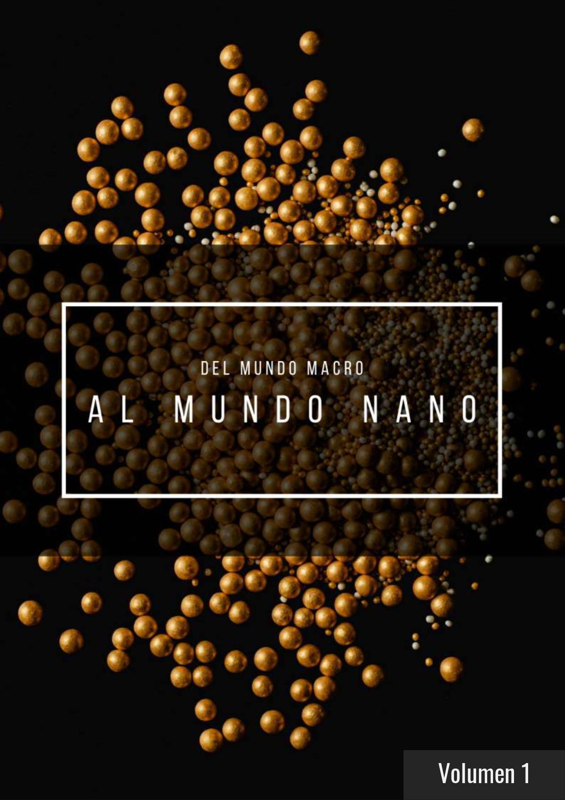

Matintec
Grupo de investigación - FQIQ -UNMSM
Grupo de investigación - FQIQ -UNMSM
El objetivo principal del grupo MATINTEC consiste en aplicar nuevos materiales y nanomateriales para potenciar la Innovación Tecnológica en diversos sectores que requieran optimizar un producto o un proceso industrial.
Tenemos el agrado de presentarles nuestro libro "Del mundo macro al mundo nano"
Esta disponible para descarga haciendo click aquí
